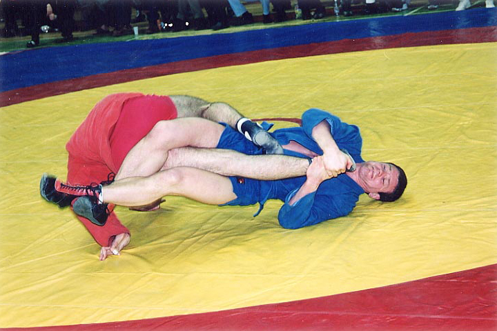

Sambo
Sambo (Russian: самбо; САМооборона Без Оружия) is a Russian martial art and combat sport. The word "SAMBO" is an acronym for SAMooborona Bez Oruzhiya, which literally translates as "self-defense without weapons". Sambo is relatively modern since its development began in the early 1920s by the Soviet Red Army to improve their hand to hand combat abilities. Intended to be a merger of the most effective techniques of other martial arts, Sambo has roots in Japanese judo plus traditional folk styles of wrestling such as: Armenian Kokh, Georgian Chidaoba, Moldavian Trîntǎ, Tatar Köräş, Uzbek Kurash, Mongolian Khapsagay and Azerbaijani Gulesh. The pioneers of Sambo were Viktor Spiridonov and Vasili Oshchepkov. Oshchepkov died in prison as a result of the political purges of 1937 after accusations of being a Japanese spy.

Early History of Sambo
Sambo's early development stemmed from the independent efforts of Vasili Oschepkov and Victor Spiridonov, to integrate the techniques of judo, jujitsu, and other foreign martial arts into native wrestling styles. Oschepkov taught judo and karate to elite Red Army forces at the Central Red Army House. Vasili Oschepkov was one of the first foreigners to learn Judo in Japan and had earned his nidan (second degree black belt, out of then five) from judo's founder, Kano Jigoro. Spiridonov's background involved indigenous martial arts from various Soviet regions as well as an interest in Japanese JuJitsu (though he never formally trained it). His reliance on movement over strength was in part based on the fact that he received a bayonet wound during World War I which left his left arm lame. Both Oschepkov and Spiridonov independently hoped that Soviet military hand-to-hand combat techniques could be improved with an infusion of the techniques distilled from other foreign martial arts. Contrary to common lore, Oschepkov and Spiridonov did not cooperate on the development of their hand-to-hand systems. Rather, their independent notions of hand-to-hand combat merged through cross-training between students and formulative efforts by their students and military staff. While Oschepkov and Spiridonov did have occasion to collaborate, their efforts were not completely united.
Sambo in the present and Future
In 1968, the FILA accepted Sambo as the third style of international wrestling. In 1985, the Sambo community formed its own organization, Federation International Amateur Sambo (FIAS). In 1993, FIAS split into two organizations, both used the same name and logo and the two groups were often referred to as FIAS "East" (under Russian control) and FIAS West" (under US and Western European control). This split mirrored the last days of Cold War politics of the time as well as the recent break-up of the Soviet Union. In the U.S., disagreements between the sport's organizers and the rise of Brazilian Jiu-Jitsu in the 1990s slowed down the growth of Sambo before the success of several Sambo fighters increased its popularity a decade later.[12] In 2005, FILA reached an agreement with FIAS "West" and re-assumed sanctioning over sport Sambo.[13] However, in 2008, FILA again discontinued sanctioning sambo and sambo is now notably missing from the FILA website.[14] At present, FIAS sanctions nternational competition in sport and combat sambo.
Visit this link:Wikpedia Reference for Sambofor more reference material.